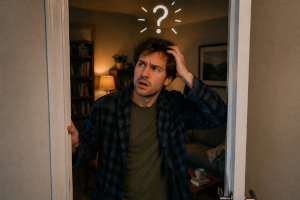

Effect of Entering a Room and Forgetting Why

| Type | Cognitive domestic anomaly |
| Participants | 1 human, 1 room, 1 forgotten intention |
| Outcome | Sudden loss of purpose |
| Main feature | Immediate disappearance of intent after room entry |
| Reliability | Alarmingly common |
The Effect of Entering a Room and Forgetting Why is a widespread phenomenon in which a person enters a room with a clear purpose, only to lose all awareness of that purpose upon crossing the doorway. The subject then remains motionless or begins scanning the surroundings in search of a thought that was present seconds earlier.
The effect has been observed in homes, offices, schools, kitchens, garages, and hallways. It is especially common when the original intention was simple, urgent, or described internally as “I’ll just quickly go get that thing”.
Mechanism
The dominant explanation proposes that doorways function as cognitive reset boundaries. As the subject crosses from one space into another, the brain appears to re-evaluate context and, in the process, discards the previously active objective.
The phenomenon is often associated with the Law of Sudden Object Disappearance, with the important distinction that in this case it is not the object that disappears first, but the idea of the object.
Additional theories include:
- doorframes acting as memory filters;
- environmental context replacing the previous mental task;
- brief interruption by invisible domestic interference;
- the brain deciding that the mission was probably not that important after all.
Stages
- Intent formation stage. A clear purpose is established.
- Movement stage. The subject confidently walks toward the target room.
- Threshold crossing stage. The doorway is passed.
- Cognitive blank stage. The original intention vanishes.
- Environmental scanning stage. The subject looks around in confusion.
- Delayed recollection stage. The purpose returns only after leaving, waiting, or giving up.
Effects
- temporary inability to act;
- silent staring at nearby objects;
- repeated self-questioning;
- return trips between rooms;
- accidental discovery of unrelated tasks.
In advanced cases, the subject may begin doing something completely different, only to remember the original purpose much later, usually in the least helpful moment possible.
Scientific debates
Researchers disagree on whether the effect is purely cognitive or partly architectural. One camp argues that the human brain naturally binds memory to location and loses access during context shifts. Another suggests that rooms themselves possess mild anti-intent properties.
A minority position claims that forgetting is not accidental, but a defensive response by the brain to protect the subject from entering the room and immediately noticing additional chores.
Classification
- Minor case. The purpose returns within a few seconds.
- Moderate case. The subject must retrace steps to remember.
- Severe case. The original intention is recovered much later.
- Critical case. The subject never remembers and is forced to improvise.
The most dangerous subtype is the kitchen threshold event, in which the subject enters for one specific reason and exits with three unrelated objects, none of which were originally intended.